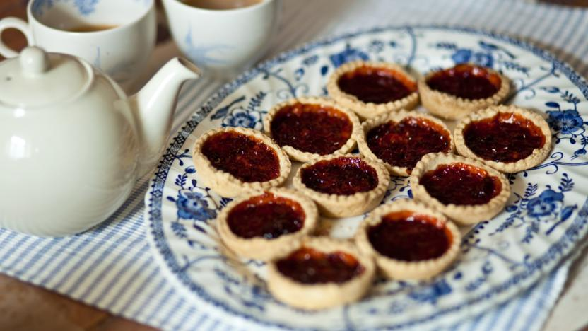

Patisserie Trio
-
Home (current)
-
About
-
Recipes
Jam Tarts
Jam Tarts

Ingredients
- 250g plain flour, plus extra for dusting
- 125g butter
- 1 medium egg
- 1 vanilla pod, seeds scraped (optional)
- 100g jam, fruit curd or marmalade of your choice
Method
- Put the flour, butter and a pinch of salt in a bowl and rub them together with your fingertips (or you can pulse these ingredients together in a food processor if you have one). When the mixture looks and feels like fresh breadcrumbs, stir in the egg and vanilla seeds, if using, with a cutlery knife. Add 1 tbsp cold water, then start to bring the dough together in one lump with your hands – try not to knead it too much. Add 1 more tbsp of water if it’s not coming together, but try not to add more than that. Wrap in cling film and chill in the fridge for 30 mins.
- Heat oven to 200C/180C fan/gas 6. Butter a 12-hole tart tin, then dust your work surface with flour. Unwrap and roll out the chilled pastry so it’s about the thickness of a £1 coin, then use a straight or fluted round cutter to cut out 12 circles, big enough to line the holes in the tin. Dollop 1-2 tsp of your chosen filling into each one and, if you like, cut out little pastry hearts (perfect for Valentine's Day) and pop them on top.
- Bake for 15-18 mins or until golden and the filling is starting to bubble a little. Leave to cool in the tin for a few mins then carefully transfer to a wire rack to cool completely.